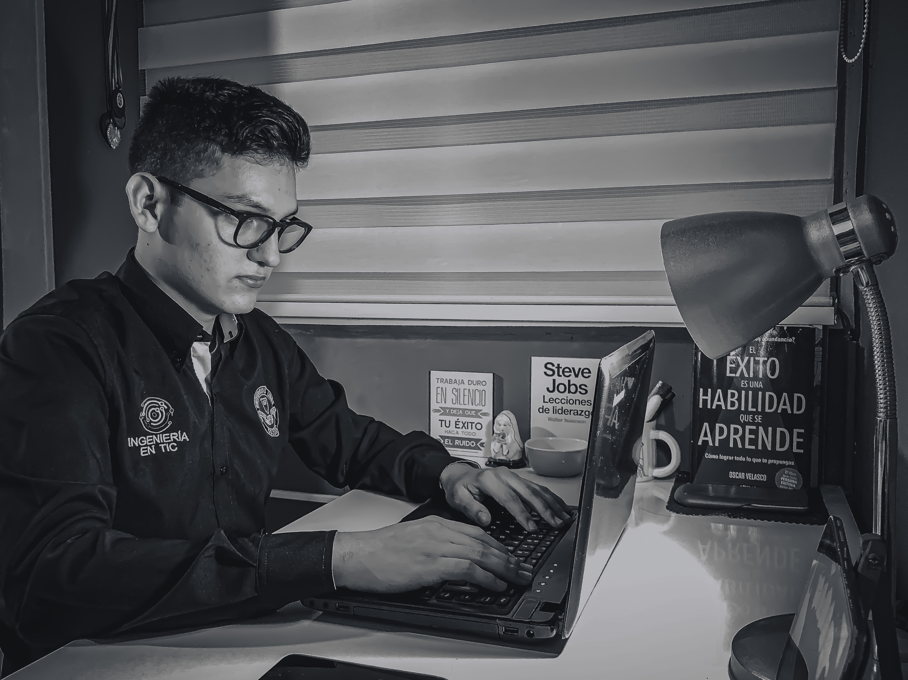

Andrei Leonardo Pérez Valencia, estudiante octavo semestre del programa de Ingeniería en Tecnologías de la Información y las Comunicaciones, Facultad de Ingeniería de la Universidad Libre Seccional Cúcuta, ha participado como ponente en la Red Colombiana de Semilleros de Investigación en los años 2017 y 2018 como también ponente encuentro nacional de ingenierías de la Universidad Libre en la seccional de la ciudad de Pereira con el proyecto GESTIÓN Y AUTOMATIZACIÓN DE PROCESOS ACADÉMICOS PARA EL SEGUIMIENTO ESTUDIANTIL, también ha participado en diferentes encuentros de ingeniería tanto local como a nivel nacional, su reciente participación fue el CONGRESO EMPRESARIAL COLOMBIANO, liderado y organizado por Asociación Nacional de Industriales(ANDI); Ha realizado proyectos en compañía de alumnos referentes a SISTEMA DE SEGURIDAD CON RFID y TRANSMISOR CON MODULACIÓN DE AMPLITUD, actualmente emprendedor digital avalado por el ministerio de las TIC en el programa